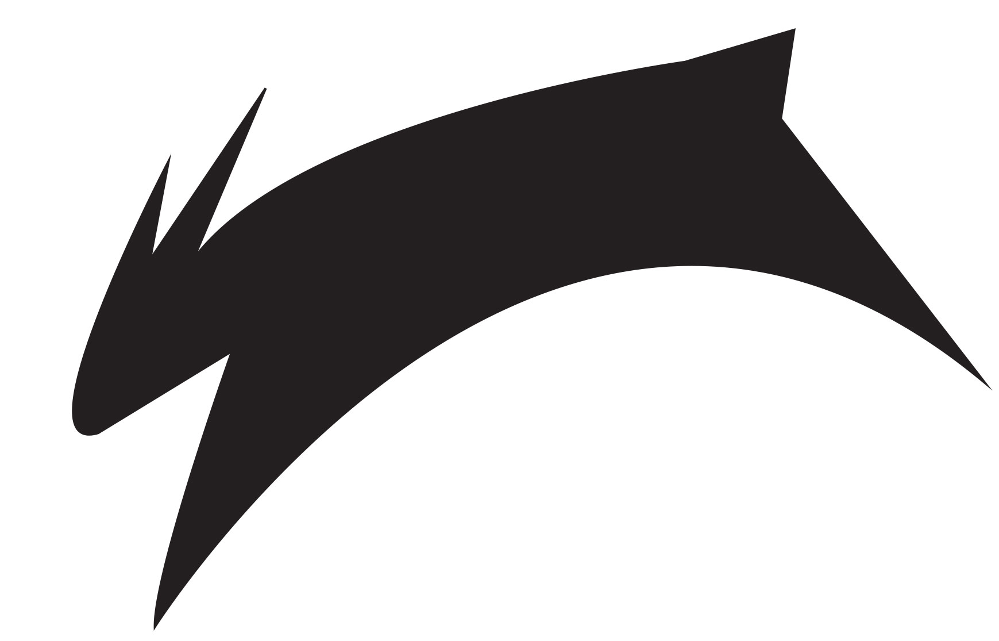

This is my graphic design portfolio I created to show some of my skills in Adobe Creative Suites. Both the "Running Girl" and the "Rabbit Logo" I made for clients of mine for their personal websites. Those are actually the two projects I am most proud of. I created them in Adobe Illustrator as SVGs but converted them to JPGs so they would be fit for the web. I had to use my creative abilities for my clients to create a logo that met their branding needs and looked aesthetically pleasing as well. I tried to keep my portfolio short and sweet. Enjoy!
Graphic Design Portfolio

